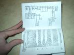

About the Pocket Dictionary
Here are some images of the most recent (7th) edition of the pocket dictionary. The CD-record in the background is included for size comparison. The black markings on the edge are my own and indicate where the different sections (Klingon–English Dictionary / English–Klingon Dictionary / Suffix Guide) are located in the book. Click on any of the thumbnails for a larger picture.

Front cover / Title in pIqaD |

Back cover / Prefix reference table |
|  Inside back cover / Suffix type tables |
 A spread from the suffix guide |
{kind=link}
These pages reflect the contents of the current version of Klingonska Akademien’s pocket-sized Klingon/English dictionary tlhIngan Hol mu’ghom mach. The book is intended as a complement to Marc Okrand’s The Klingon Dictionary (Simon & Schuster, 1992, ISBN 0-671-74559-X) and does, because of this and because of size considerations, not contain any description of the grammar. Included is, however (as you will find out if you take a look around these pages), Klingon–English and English–Klingon dictionary sections, a brief pronunciation guide (including stress), and reference tables for pIqaD, pronunciation, and prefix and suffix usage.
The first edition of this dictionary was created in 1997, since then I have continued to use and improve it (I always carry one with me). The seventh edition was finished in January 2002 and it contains a new, more complete Suffix Guide as the most notable addition.
If you are would like to obtaining a copy then feel free to contact me about it. If you’re really into Klingon I’d be happy to provide you with one, but if you are just looking for something to impress your friends with, then I recommend you buy The Klingon Dictionary instead. It will look a lot more impressive in your book shelf. (Besides, if you just want to impress your friends, a Klingon costume is what you should be looking for.) Since there is no description of the Klingon grammar in the dictionary, it will be quite useless to you if you don’t know at least some Klingon.
/ Zrajm C Akfohg, February 2002
The copyright page from the book.
tlhIngan Hol mu’ghom
mach
7th edition, 22 January 2002, Uppsala
Compiling and editing:
Zrajm C “maHvatlh” Akfohg
〈zrajm@klingonska.org〉
Affix tables and proofreading:
Markus “qa’naQ”
Persson 〈mp@klingonska.org〉
This book was produced by Klingonska Akademien, a language society situated in Uppsala, Sweden. We are dedicated to the study and teaching of the Klingon language. For more information about us and our activities please refer to:
| Homepage: | klingonska.org |
| Mailing list: | klingonska@klingonska.org (in Swedish) |
The dictionary parts were extracted from a continuously updated database. Typesetting and layout was done in Emacs and LaTeX. Programming was done in Perl, all this under GNU/Linux.
Should you find any errors or omissions, please report them, so that we may continue to improve future editions of this book.